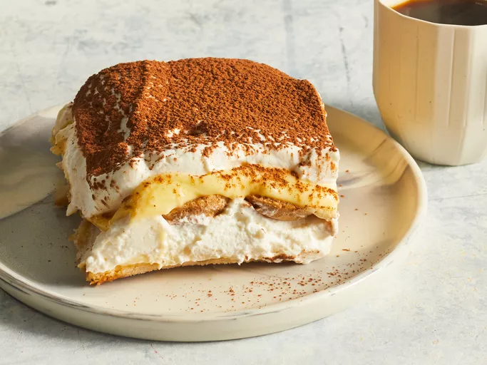

Homepage
Tiramisu

Tiramisu is a classic Italian layered dessert that's easy to make at home with coffee-soaked ladyfingers, a creamy mascarpone custard, and whipped cream.
Ingredients
- Sugar
- Milk
- Cream
- Vanilla Extract
- Mascarpone
- Coffee
- Rum
- Lady Fingers
- Cocoa Powder
Directions
- Make the Filling: Cook the egg yolks, sugar, and milk until slightly thickened. Let cool slightly, then chill in the fridge for about an hour. When the filling has fully chilled, mix in mascarpone cheese.
- Make the Whipped Cream: Beat heavy cream with vanilla extract until stiff peaks form.
- Soak the Ladyfingers: Combine coffee and rum in a small bowl. Pour mixture over ladyfingers that have been split in half lengthwise.
- Assemble the Tiramisu: Line the bottom of a baking dish with soaked ladyfingers. Spread half of the mascarpone mixture over the ladyfingers, then half of the whipped cream over that. Repeat in the same order. Dust with cocoa powder.